notifications
Real Windows 10/11 notifications from a Clarion program — the ones that slide in at the bottom-right and stay in the notification centre, like Outlook's and Teams'. Design them in the Notification Designer with a live Windows 11 preview, drop a code template where one should appear, and react in your own embeds when the user clicks, presses a button or types a reply.
Notificaciones reales de Windows 10/11 desde un programa Clarion — las que entran por la esquina inferior derecha y quedan en el centro de notificaciones, como las de Outlook y Teams. Se diseñan en el Notification Designer con una vista previa de Windows 11 en vivo, se pone una plantilla de código donde deba aparecer, y se reacciona en sus propios embeds cuando el usuario hace clic, pulsa un botón o escribe una respuesta.
no DLL · no OCX · no .NET at run time · designer · buttons · replies · progress · EN / ES sin DLL · sin OCX · sin .NET en ejecución · diseñador · botones · respuestas · progreso · EN / ESOverviewResumen #
A notification is a small card Windows owns: it pops up for a few seconds, then waits in the notification centre until the user deals with it. Your program only describes it — in a few lines of XML — and Windows draws it in the user's theme, language and accent colour.
The set has three parts that meet at one file format, the .ntf design:
| Part | What it is |
|---|---|
| Notification Designer | A Windows program (NotificationDesigner.exe) that edits a
design with a live Windows 11 preview, light and dark, checks it against the rules Windows enforces, and sends
it to Windows for real with one button. Saves .ntf files. |
| NotificationClass + toastc.c | The run time. A Clarion class over a C engine that
Clarion's own compiler builds into your program. It talks to Windows.UI.Notifications directly —
there is nothing to ship and nothing to register as COM. |
| notifications.tpl | Five templates: a global extension that registers the program with Windows, three code templates (show, update a progress bar, remove) and a window extension whose embeds run when the user clicks. |
| notifications 1.0 | |
|---|---|
| Needs a DLL / OCX / .NET | No — the C engine is compiled into the program |
| Windows | Windows 10 (1809+) and Windows 11; per user, no admin rights |
| Content | Title, two lines, attribution, round or square logo, hero picture, inline picture, progress bar |
| Interaction | Up to 5 buttons (to the program, to a web address, snooze, dismiss), text box, choice list |
| Kinds | Normal, reminder, alarm, incoming call, urgent (breaks through Do Not Disturb on Windows 11) |
| Live updates | Progress bars and any other {binding}, without a new pop-up |
| Values | {Placeholders} filled from Clarion expressions |
| Strings | ANSI (the program's code page) or UTF-8 |
Una notificación es una tarjeta pequeña que pertenece a Windows: aparece unos segundos y luego espera en el centro de notificaciones hasta que el usuario la atiende. Su programa solo la describe —con unas líneas de XML— y Windows la dibuja con el tema, el idioma y el color de acento del usuario.
El conjunto tiene tres partes que se encuentran en un formato de archivo, el diseño .ntf:
| Parte | Qué es |
|---|---|
| Notification Designer | Un programa de Windows (NotificationDesigner.exe) que edita
un diseño con vista previa de Windows 11 en vivo, clara y oscura, lo comprueba contra las reglas que impone
Windows y lo envía a Windows de verdad con un botón. Guarda archivos .ntf. |
| NotificationClass + toastc.c | El motor de ejecución. Una clase Clarion sobre un motor
en C que el propio compilador de Clarion incorpora al programa. Habla directamente con
Windows.UI.Notifications: no hay nada que distribuir ni que registrar como COM. |
| notifications.tpl | Cinco plantillas: una extensión global que registra el programa en Windows, tres plantillas de código (mostrar, mover una barra de progreso, quitar) y una extensión de ventana cuyos embeds se ejecutan cuando el usuario hace clic. |
| notifications 1.0 | |
|---|---|
| Necesita DLL / OCX / .NET | No — el motor en C se compila dentro del programa |
| Windows | Windows 10 (1809+) y Windows 11; por usuario, sin permisos de administrador |
| Contenido | Título, dos líneas, atribución, logo redondo o cuadrado, imagen principal, imagen en línea, barra de progreso |
| Interacción | Hasta 5 botones (al programa, a una dirección web, posponer, descartar), caja de texto, lista de opciones |
| Tipos | Normal, recordatorio, alarma, llamada entrante, urgente (atraviesa No molestar en Windows 11) |
| Actualización en vivo | Barras de progreso y cualquier otro {enlace}, sin nueva ventana emergente |
| Valores | {Marcadores} llenados con expresiones Clarion |
| Cadenas | ANSI (la página de códigos del programa) o UTF-8 |
What they look likeCómo se ven #
These are real notifications, photographed off the screen as Windows 11 drew them — every one
is a design shipped in examples/notifications, shown by the demo program. The faint warm tint is
Windows' translucent card picking up the desktop behind it.
Son notificaciones reales, fotografiadas de la pantalla tal como las dibujó Windows 11 —cada
una es un diseño incluido en examples/notifications, mostrado por el programa de demostración. El
ligero tono cálido es la tarjeta translúcida de Windows dejando ver el escritorio.
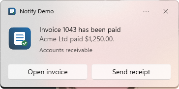
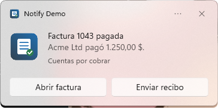
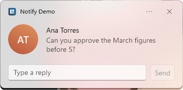
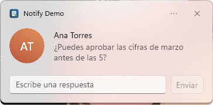
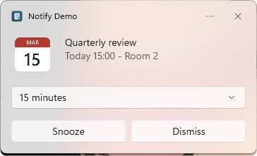
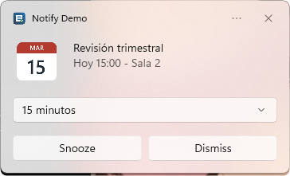
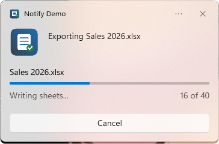
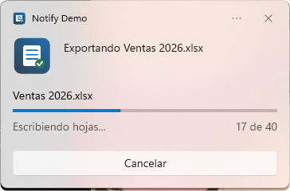
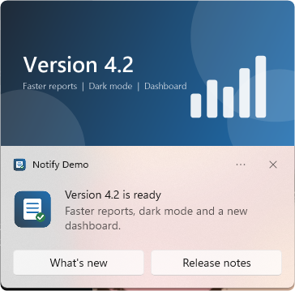
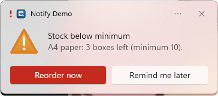
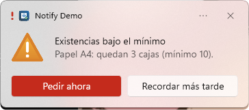
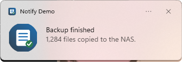
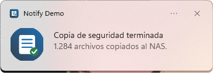
Notifier.Toast(title, text, logo)Una línea de código: Notifier.Toast(título, texto, logo)The demoLa demo #
examples/notifications holds two programs and the sample designs:
NotifyDemo.clw / .cwproj the template's code written out by hand, every line annotated with its embed
NotifyTest.clw / .cwproj windowless self-test: 31 checks, XML byte for byte + live Windows calls
*.ntf, *-es.ntf the seven presets, English and Spanish
images\ logo, avatar, calendar, warning, hero (make-images.ps1 draws them)
shoot.ps1 the screenshots on this page, regenerated
gen\ the TEMPLATE run end to end: NotifyGen.txa -> AppGen -> compile (build.sh)
NotifyDemo.exe (add es for Spanish) has a button per design and a list on the right that
shows exactly what the program receives: clicked action=open;invoice=1043, the text of a reply, the
snooze time picked, and every dismissal with its reason. Click the notifications and their buttons to see it.
examples/notifications contiene dos programas y los diseños de ejemplo:
NotifyDemo.clw / .cwproj el código de la plantilla escrito a mano, cada línea anotada con su embed
NotifyTest.clw / .cwproj autoprueba sin ventana: 31 comprobaciones, el XML byte a byte + llamadas reales a Windows
*.ntf, *-es.ntf los siete diseños de ejemplo, en inglés y en español
images\ logo, avatar, calendario, aviso, imagen principal (las dibuja make-images.ps1)
shoot.ps1 regenera las capturas de esta página
gen\ la PLANTILLA de punta a punta: NotifyGen.txa -> AppGen -> compilar (build.sh)
NotifyDemo.exe (añada es para español) tiene un botón por diseño y una lista a la derecha
que muestra exactamente lo que recibe el programa: clic action=open;invoice=1043, el texto de una
respuesta, el tiempo de posposición elegido y cada cierre con su motivo. Haga clic en las notificaciones y en sus
botones para verlo.
Install & registerInstalar y registrar #
| File | Goes to |
|---|---|
notifications.tpl | accessory\template\win |
NotificationClass.inc, NotificationClass.clw, toastc.c | accessory\libsrc\win (stored ANSI; the class links itself in) |
NotificationDesigner.exe | accessory\bin — the code template's Design button looks for it there (%CWRoot) |
Then Setup → Template Registry → Register notifications.tpl and restart the IDE (it caches the
registry when it starts). The designer is a single self-contained executable — it needs nothing installed.
| Archivo | Va a |
|---|---|
notifications.tpl | accessory\template\win |
NotificationClass.inc, NotificationClass.clw, toastc.c | accessory\libsrc\win (en ANSI; la clase se enlaza sola) |
NotificationDesigner.exe | accessory\bin — el botón Design de la plantilla de código lo busca ahí (%CWRoot) |
Luego Setup → Template Registry → Register de notifications.tpl y reinicie el IDE (guarda el
registro en memoria al arrancar). El diseñador es un único ejecutable autocontenido: no necesita instalar nada.
Three stepsTres pasos #
- Global: add notifications - Global to the application. On Identity, give the program the name and icon its notifications should carry.
- Show: in the embed where a notification belongs (a button's Accepted, the end of a process, a timer),
insert the code template notifications - Show a notification. Press Design... to open the
designer, save the design, pick the file, and on Placeholders give each
{Name}a Clarion expression. - React: add notifications - React when a notification is clicked to the frame. List the
action=values your designs send on its Actions tab; each gets an embed.
- Global: añada notifications - Global a la aplicación. En Identity, dé al programa el nombre y el icono que deben llevar sus notificaciones.
- Mostrar: en el embed donde corresponde una notificación (el Accepted de un botón, el final de un proceso,
un temporizador), inserte la plantilla de código notifications - Show a notification. Pulse
Design... para abrir el diseñador, guarde el diseño, elija el archivo y en Placeholders dé a cada
{Nombre}una expresión Clarion. - Reaccionar: añada notifications - React when a notification is clicked al marco. Enumere en la
pestaña Actions los valores
action=que envían sus diseños; cada uno tiene su embed.
The five templatesLas cinco plantillas #
| Template | Kind | Prompts | Generates |
|---|---|---|---|
| NotificationsGlobal | APPLICATION | Object name (Notifier); program name,
icon, icon background, AppUserModelID; pictures folder; UTF-8; clear on close; unregister on close; the
designer button; ABC Multi-DLL override | INCLUDE, the global Notifier NotificationClass,THREAD,
Init(...) at %ProgramSetup, Kill() at %ProgramEnd (EXE only) |
| ShowNotification | CODE | Design file + Design...; embed it or read it at run time; placeholders (name = expression); tag, group, silent; variable for the id | Reset + one
AddXml per line of the design (or LoadDesign), SetVar per placeholder,
ShowToast |
| UpdateNotification | CODE | Tag, value (0–1), status, value text | UpdateProgress(...) |
| RemoveNotification | CODE | By tag, by group, or all | Remove / RemoveGroup / RemoveAll |
| NotificationEvents | PROCEDURE, WINDOW | Object, poll interval (1/100 s, default 25), bring the window forward, the list of actions | A CASE EVENT() in TakeWindowEvent
that drains the queue on EVENT:Timer, with an embed per action |
| Plantilla | Tipo | Preguntas | Genera |
|---|---|---|---|
| NotificationsGlobal | APPLICATION | Nombre del objeto (Notifier); nombre del
programa, icono, fondo del icono, AppUserModelID; carpeta de imágenes; UTF-8; borrar al cerrar; desregistrar al
cerrar; el botón del diseñador; el reemplazo Multi-DLL de ABC | INCLUDE, el global
Notifier NotificationClass,THREAD, Init(...) en %ProgramSetup,
Kill() en %ProgramEnd (solo EXE) |
| ShowNotification | CODE | Archivo de diseño + Design...; incrustarlo o leerlo en ejecución; marcadores (nombre = expresión); etiqueta, grupo, silencio; variable para el id | Reset
+ un AddXml por línea del diseño (o LoadDesign), un SetVar por marcador,
ShowToast |
| UpdateNotification | CODE | Etiqueta, valor (0–1), estado, texto del valor | UpdateProgress(...) |
| RemoveNotification | CODE | Por etiqueta, por grupo o todas | Remove / RemoveGroup / RemoveAll |
| NotificationEvents | PROCEDURE, WINDOW | Objeto, intervalo de consulta (1/100 s, por defecto 25), traer la ventana al frente, la lista de acciones | Un CASE EVENT() en
TakeWindowEvent que vacía la cola en EVENT:Timer, con un embed por acción |
The Notification DesignerEl diseñador #
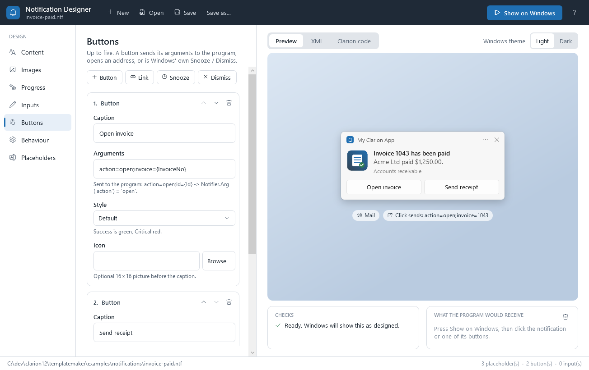
invoice-paid.ntf. The preview
follows every keystroke; Checks applies Windows' own rules; the right panel shows what the program receives
when you press Show on Windows and click.Editando los botones de
invoice-paid.ntf. La vista previa sigue cada tecla; Checks aplica las reglas de Windows; el
panel derecho muestra lo que recibe el programa al pulsar Show on Windows y hacer clic. (El diseñador está
en inglés, como los diálogos de AppGen.)Seven sections down the left, each a form; the stage on the right has three tabs:
| Section | Edits |
|---|---|
| Content | Title (bold, two lines), text, second text, attribution |
| Images | App logo (round crop for avatars), hero picture, inline picture |
| Progress | A bar with fixed values, or live: bound to {progressValue} and friends so the program moves it |
| Inputs | Text boxes and choice lists; the program reads them by id |
| Buttons | Button (to the program), Link (opens an address), Snooze, Dismiss; style Default/Success/Critical; a 16×16 icon; "beside the text box" for Send |
| Behaviour | What a click on the body sends, the kind (reminder, alarm, call, urgent), long duration, sound, loop, silent |
| Placeholders | Every {Name} found, with a sample value; the program name and icon the preview pretends to be |
Preview draws Windows 11's layout in light or dark; XML is the file exactly as saved; Clarion code
writes the calls for this design — LoadDesign, one SetVar per placeholder, and the
CASE Notifier.Arg('action') skeleton with one OF per action the design sends.
New offers seven presets; F5 is Show on Windows.
Show on Windows registers the designer the same way toastc_init registers your program (under the
name and icon on the Placeholders section), fills in the samples, turns picture paths into file:///
URIs and hands the XML to Windows. Click the notification or a button and the right-hand panel shows
EventArgs and every Input('id') — what NextEvent() will give your program.
Started as NotificationDesigner.exe design.ntf it opens that file; if it does not exist yet it starts a
new design that will be saved there. Every message is a modal panel in the designer, never a system message box.
Siete secciones a la izquierda, cada una un formulario; el escenario de la derecha tiene tres pestañas:
| Sección | Edita |
|---|---|
| Content | Título (negrita, dos líneas), texto, segundo texto, atribución |
| Images | Logo de la aplicación (recorte redondo para avatares), imagen principal, imagen en línea |
| Progress | Una barra con valores fijos o en vivo: enlazada a {progressValue} y compañía para que la mueva el programa |
| Inputs | Cajas de texto y listas de opciones; el programa las lee por su id |
| Buttons | Botón (al programa), Enlace (abre una dirección), Posponer, Descartar; estilo Default/Success/Critical; icono de 16×16; "junto a la caja de texto" para Enviar |
| Behaviour | Lo que envía un clic en el cuerpo, el tipo (recordatorio, alarma, llamada, urgente), duración larga, sonido, repetición, silencio |
| Placeholders | Cada {Nombre} encontrado, con un valor de muestra; el nombre e icono del programa que simula la vista previa |
Preview dibuja la disposición de Windows 11 en claro u oscuro; XML es el archivo tal como se guarda;
Clarion code escribe las llamadas para este diseño —LoadDesign, un SetVar por
marcador y el esqueleto CASE Notifier.Arg('action') con un OF por acción que envía el
diseño. New ofrece siete puntos de partida; F5 es Show on Windows.
Show on Windows registra el diseñador igual que toastc_init registra su programa (con el nombre e
icono de la sección Placeholders), rellena las muestras, convierte las rutas de imagen en URIs
file:/// y entrega el XML a Windows. Haga clic en la notificación o en un botón y el panel derecho
muestra EventArgs y cada Input('id'): lo que NextEvent() le dará a su programa.
Arrancado como NotificationDesigner.exe diseño.ntf abre ese archivo; si aún no existe empieza un diseño
nuevo que se guardará ahí. Todos los mensajes son paneles modales del diseñador, nunca un cuadro de mensaje del sistema.
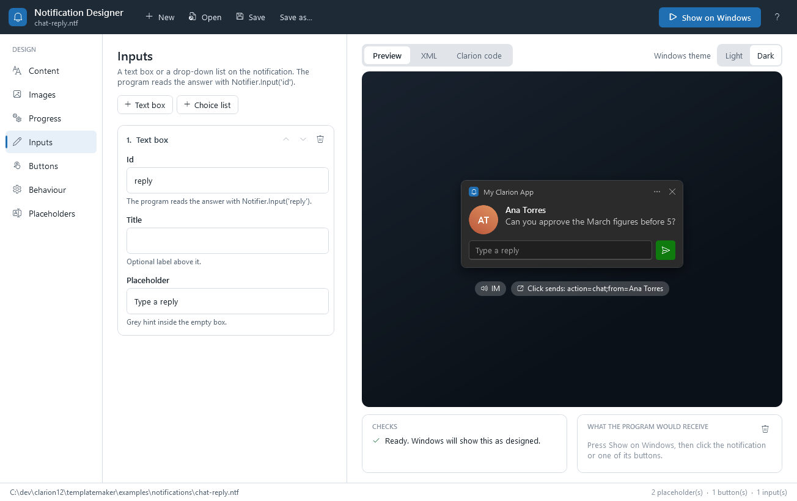
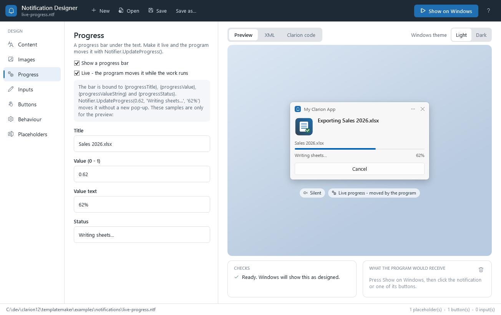
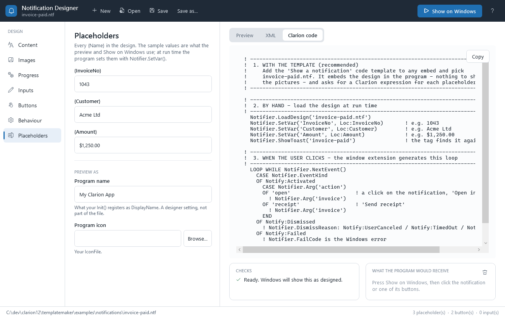
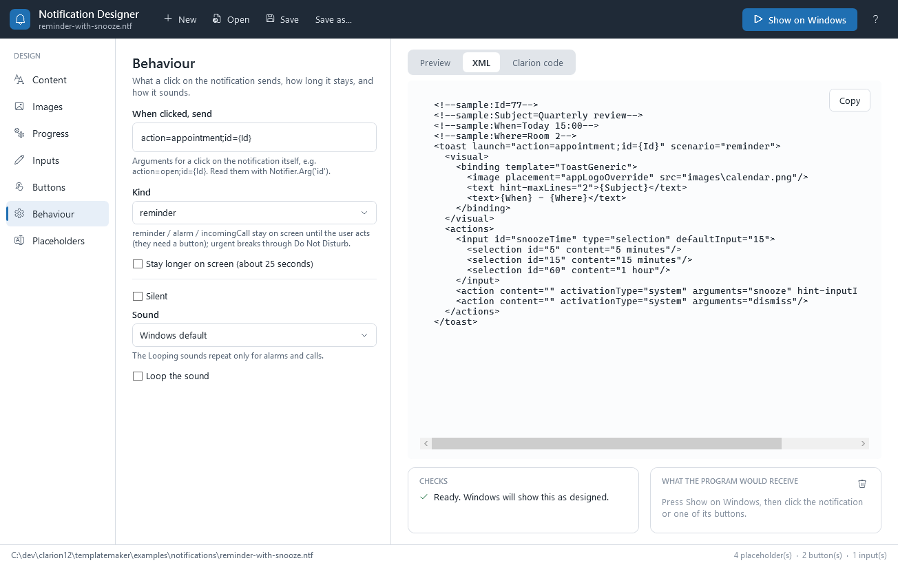
The .ntf fileEl archivo .ntf #
A design is Windows toast XML (the ToastGeneric schema) — no wrapper, no private format. You can
open it in any editor, and anything the designer does not model is still valid for Windows.
<!--sample:InvoiceNo=1043--> <!--sample:Customer=Acme Ltd--> <toast launch="action=open;invoice={InvoiceNo}"> <visual> <binding template="ToastGeneric"> <image placement="appLogoOverride" src="images\logo.png"/> <text hint-maxLines="2">Invoice {InvoiceNo} has been paid</text> <text>{Customer} paid {Amount}.</text> </binding> </visual> <actions> <action content="Open invoice" arguments="action=open;invoice={InvoiceNo}"/> </actions> </toast>
Three properties of the writer (ToastXml.Write) make the template's job safe:
- One element per line — the template turns each line into one
AddXml('...'). - Pure ASCII. Anything above 127 is written as a character reference (
ófor ó), so neither AppGen nor the run time has to guess a code page. The Spanish designs prove it: "pagó" arrives intact. - Sample values travel as comments above the root, which Windows ignores and the template skips.
Un diseño es XML de notificación de Windows (el esquema ToastGeneric): sin envoltorio ni formato
propio. Se puede abrir en cualquier editor, y lo que el diseñador no modela sigue siendo válido para Windows.
<!--sample:InvoiceNo=1043--> <!--sample:Customer=Acme Ltd--> <toast launch="action=open;invoice={InvoiceNo}"> <visual> <binding template="ToastGeneric"> <image placement="appLogoOverride" src="images\logo.png"/> <text hint-maxLines="2">Factura {InvoiceNo} pagada</text> <text>{Customer} pagó {Amount}.</text> </binding> </visual> <actions> <action content="Abrir factura" arguments="action=open;invoice={InvoiceNo}"/> </actions> </toast>
Tres propiedades del escritor (ToastXml.Write) hacen segura la tarea de la plantilla:
- Un elemento por línea: la plantilla convierte cada línea en un
AddXml('...'). - ASCII puro. Todo lo que pasa de 127 se escribe como referencia de carácter (
ópara ó), así que ni AppGen ni la ejecución tienen que adivinar una página de códigos. Los diseños en español lo demuestran: "pagó" llega intacto. - Los valores de muestra viajan como comentarios encima de la raíz, que Windows ignora y la plantilla omite.
Placeholders & bindingsMarcadores y enlaces #
Braces mean two different things, and Substitute (NotificationClass.clw:471) tells them apart at the
moment the notification is shown:
| In the design | Set by | What happens |
|---|---|---|
{Customer} with a SetVar('Customer', ...) | The program, before showing | Placeholder. Replaced by the value, XML-escaped (so Acme & Sons <Ltd> is safe — the
template harness uses exactly that). Case-insensitive. |
{progressValue}, or any {name} with no SetVar | Windows, from the notification's data | Binding. Left in the XML and given an entry in the data
(progressValue starts at 0, others empty), so it can be changed later with
UpdateData/UpdateProgress without a new pop-up. |
{ not a name } | — | Left alone: only letters, digits and _ make a name. |
Placeholders work everywhere: text, arguments, button captions, even picture paths (logos\{Customer}.png).
The ShowNotification template scans the design while generating and reports a placeholder with no value on its
Placeholders tab as a generator error, naming the file and the placeholder.
Las llaves significan dos cosas distintas, y Substitute (NotificationClass.clw:471) las distingue en el
momento de mostrar la notificación:
| En el diseño | Lo fija | Qué pasa |
|---|---|---|
{Customer} con un SetVar('Customer', ...) | El programa, antes de mostrar | Marcador. Se sustituye por el valor, escapado para XML (así Acme & Sons <Ltd> es
seguro; el banco de pruebas de la plantilla usa exactamente eso). No distingue mayúsculas. |
{progressValue}, o cualquier {nombre} sin SetVar | Windows, con los datos de la notificación | Enlace. Se deja en el XML y se le da una entrada en los datos
(progressValue empieza en 0, los demás vacíos), para poder cambiarlo después con
UpdateData/UpdateProgress sin nueva ventana emergente. |
{ no es un nombre } | — | Se deja tal cual: solo letras, dígitos y _ forman un nombre. |
Los marcadores funcionan en todas partes: textos, argumentos, textos de botón, incluso rutas de imagen
(logos\{Customer}.png). La plantilla ShowNotification recorre el diseño al generar e informa como error
del generador un marcador sin valor en su pestaña Placeholders, con el archivo y el marcador.
PicturesImágenes #
Windows wants a URI; designs hold paths. FileUri (NotificationClass.clw:573) converts every
src="..." and imageUri="..." as the XML is assembled:
| Path in the design | Becomes |
|---|---|
images\logo.png (relative) | file:///<base>/images/logo.png, where base is
ImageFolder if set, else the folder of the design loaded with LoadDesign, else the folder
the program runs from |
C:\a b\x.png | file:///C:/a%20b/x.png |
\\srv\share\x.png | file://srv/share/x.png |
https://..., ms-appdata:..., file:... | unchanged |
So: ship the images folder beside the program. PNG, JPG and GIF, local files; Windows draws
nothing at all for a picture it cannot read (the designer shows a grey placeholder and a warning instead).
Windows quiere una URI; los diseños guardan rutas. FileUri (NotificationClass.clw:573) convierte cada
src="..." e imageUri="..." al armar el XML:
| Ruta en el diseño | Se convierte en |
|---|---|
images\logo.png (relativa) | file:///<base>/images/logo.png, donde la base
es ImageFolder si está puesta, si no la carpeta del diseño cargado con LoadDesign, y si no
la carpeta desde la que se ejecuta el programa |
C:\a b\x.png | file:///C:/a%20b/x.png |
\\srv\share\x.png | file://srv/share/x.png |
https://..., ms-appdata:..., file:... | sin cambios |
Por tanto: distribuya la carpeta images junto al programa. PNG, JPG y GIF, archivos locales;
Windows no dibuja nada si no puede leer una imagen (el diseñador muestra un recuadro gris y un aviso).
Clicks, buttons, repliesClics, botones, respuestas #
Every interaction arrives as one event with three kinds:
| EventKind | When | Read |
|---|---|---|
Notify:Activated | The body was clicked (its launch arguments) or a button
was pressed (its arguments) | EventArgs, Arg('key'),
Input('id') for every text box and choice list |
Notify:Dismissed | Closed by the user, timed out to the notification centre, or hidden by the program | DismissReason: Notify:UserCanceled / Notify:TimedOut /
Notify:AppHidden |
Notify:Failed | Windows refused to show it (switched off, bad XML) | FailCode (HRESULT) |
Arguments are a convention, not a format: the designer and the presets use key=value pairs separated by
;, and Arg also splits on &. Arg('action') on
action=open;invoice=1043 is open; Arg('') returns the whole string.
Link buttons (activationType="protocol") are handled by Windows — the browser opens and your program is
not told. Snooze and Dismiss are Windows' too; Snooze with a choice list uses the picked id as minutes.
Cada interacción llega como un evento de tres tipos:
| EventKind | Cuándo | Leer |
|---|---|---|
Notify:Activated | Se hizo clic en el cuerpo (sus argumentos launch) o se pulsó
un botón (sus arguments) | EventArgs, Arg('clave'),
Input('id') para cada caja de texto y lista |
Notify:Dismissed | Cerrada por el usuario, pasada al centro por tiempo, u ocultada por el programa | DismissReason: Notify:UserCanceled / Notify:TimedOut /
Notify:AppHidden |
Notify:Failed | Windows se negó a mostrarla (desactivada, XML incorrecto) | FailCode (HRESULT) |
Los argumentos son una convención, no un formato: el diseñador y los ejemplos usan pares clave=valor
separados por ;, y Arg también separa por &. Arg('action')
sobre action=open;invoice=1043 da open; Arg('') devuelve la cadena entera.
Los botones de enlace (activationType="protocol") los atiende Windows: se abre el navegador y el
programa no se entera. Posponer y Descartar también son de Windows; Posponer con una lista usa el id elegido como minutos.
Live progressProgreso en vivo #
Show the design once with a tag, then move it as often as you like; Windows updates the card in place, with no new pop-up and no sound:
Notifier.LoadDesign('live-progress.ntf') Notifier.SetVar('Report', 'Sales 2026.xlsx') Notifier.ShowToast('export') ! the tag finds it again LOOP i = 1 TO Total ! ... the work ... Notifier.UpdateProgress(i / Total, 'Writing sheets...', i & ' of ' & Total, 'export') END Notifier.Remove('export')
UpdateProgress returns 0 when it updated, 2 when the notification is gone (the user closed it) — a cheap
way to notice the user lost interest. Each update sends all the notification's data again with a higher
sequence number, so an update that arrives late cannot overwrite a newer one.
Muestre el diseño una vez con una etiqueta y luego muévalo cuantas veces quiera; Windows actualiza la tarjeta en su sitio, sin nueva ventana emergente y sin sonido:
Notifier.LoadDesign('live-progress.ntf') Notifier.SetVar('Report', 'Ventas 2026.xlsx') Notifier.ShowToast('export') ! la etiqueta la vuelve a encontrar LOOP i = 1 TO Total ! ... el trabajo ... Notifier.UpdateProgress(i / Total, 'Escribiendo hojas...', i & ' de ' & Total, 'export') END Notifier.Remove('export')
UpdateProgress devuelve 0 si actualizó y 2 si la notificación ya no está (el usuario la cerró): una
forma barata de saber que el usuario perdió interés. Cada actualización reenvía todos los datos de la
notificación con un número de secuencia mayor, así una actualización que llega tarde no pisa a una más nueva.
Name, icon, AppUserModelIDNombre, icono, AppUserModelID #
Windows files notifications under an AppUserModelID. A packaged (Store) app has one built in; a Clarion
program does not, so toastc_init (toastc.c:517) creates one per user, with no admin rights and no Start
menu shortcut:
HKCU\Software\Classes\AppUserModelId\<your id> DisplayName "Notify Demo" the header of every notification IconUri "C:\...\images\logo.png" absolute; made from the relative path IconBackgroundColor "FF1F6FB2" optional
Keep the id the same for the life of the program: it is also where Windows keeps the user's choice to switch your
notifications off (Settings → System → Notifications). The default is Clarion.<application>.
Name and icon are re-written at every start, so changing them takes effect on the next run.
Windows archiva las notificaciones bajo un AppUserModelID. Una aplicación empaquetada (Store) ya lo trae; un
programa Clarion no, así que toastc_init (toastc.c:517) crea uno por usuario, sin permisos de
administrador y sin acceso directo en el menú Inicio:
HKCU\Software\Classes\AppUserModelId\<su id> DisplayName "Notify Demo" la cabecera de cada notificación IconUri "C:\...\images\logo.png" absoluta; hecha a partir de la ruta relativa IconBackgroundColor "FF1F6FB2" opcional
Mantenga el id igual durante toda la vida del programa: también es donde Windows guarda la decisión del usuario de
desactivar sus notificaciones (Configuración → Sistema → Notificaciones). El valor por defecto es
Clarion.<aplicación>. El nombre y el icono se reescriben en cada arranque, así que cambiarlos
surte efecto en la siguiente ejecución.
The C engineEl motor en C #
toastc.c is compiled by Clarion's own C compiler (PRAGMA('compile(toastc.c)') in
NotificationClass.clw). That compiler has no Windows SDK headers and spells stdcall pascal, so the
engine declares the small Win32 surface itself and binds the rest at run time:
| From | Bound | Used for |
|---|---|---|
| combase.dll | LoadLibrary + GetProcAddress | RoInitialize,
RoGetActivationFactory, RoActivateInstance, the HSTRING functions |
| advapi32.dll | same | the AppUserModelID registry key |
| kernel32 / user32 | linked | strings, critical section, TLS, bring-to-front |
WinRT objects are reached through their vtables: every WinRT interface starts at slot 6 (IUnknown 0–2,
IInspectable 3–5), and the slot numbers for IToastNotifier, IToastNotification,
IXmlDocumentIO, INotificationData and the rest were taken from the Windows SDK 10.0.26100
headers. The three event-handler interfaces are parameterised (TypedEventHandler<ToastNotification, X>),
so their IIDs are not in any header — they were computed with WinRT's own GuidGenerator and are
written in toastc.c with that note.
Threading. Each Clarion thread that calls in gets a single-threaded apartment the first time (a TLS flag;
single-threaded so a later OleInitialize by OLE controls still works). Windows raises the events on a
thread-pool thread; the handler objects are agile (they answer IAgileObject), copy the arguments
and keep a reference to the user's input under a critical section, and return. Nothing in the engine ever calls back
into the Clarion run time. The queue holds 64 events; the oldest is dropped if nobody drains it.
toastc.c lo compila el propio compilador C de Clarion (PRAGMA('compile(toastc.c)') en
NotificationClass.clw). Ese compilador no trae las cabeceras del SDK de Windows y escribe stdcall como
pascal, así que el motor declara él mismo la pequeña superficie de Win32 que usa y enlaza el resto en
ejecución:
| De | Enlace | Para |
|---|---|---|
| combase.dll | LoadLibrary + GetProcAddress | RoInitialize,
RoGetActivationFactory, RoActivateInstance, las funciones HSTRING |
| advapi32.dll | igual | la clave de registro del AppUserModelID |
| kernel32 / user32 | enlazadas | cadenas, sección crítica, TLS, traer al frente |
A los objetos WinRT se llega por sus vtables: toda interfaz WinRT empieza en la posición 6 (IUnknown 0–2,
IInspectable 3–5), y las posiciones de IToastNotifier, IToastNotification,
IXmlDocumentIO, INotificationData y demás se tomaron de las cabeceras del SDK de Windows
10.0.26100. Las tres interfaces de manejadores de eventos son parametrizadas
(TypedEventHandler<ToastNotification, X>), así que sus IID no están en ninguna cabecera: se
calcularon con el GuidGenerator de WinRT y figuran en toastc.c con esa nota.
Hilos. Cada hilo Clarion que llama recibe un apartamento de un solo hilo la primera vez (un indicador TLS; de
un solo hilo para que un OleInitialize posterior de los controles OLE siga funcionando). Windows lanza
los eventos en un hilo del grupo; los objetos manejadores son ágiles (responden a IAgileObject),
copian los argumentos y guardan una referencia a la entrada del usuario bajo una sección crítica, y vuelven. Nada en
el motor llama de vuelta al run time de Clarion. La cola guarda 64 eventos; si nadie la vacía se descarta el más viejo.
The classLa clase #
NotificationClass owns five text buffers (NotifyBufClass, a growable string) and two
queues; the engine owns everything Windows gave it. The global object is ,THREAD, so each thread builds
its own notification, while registration, the notifier and the event queue are process-wide.
| Member | Holds |
|---|---|
Xml | Raw XML from AddXml / LoadDesign |
Vis, Inp, Act | The builder: what goes inside <binding>, the <input>s, the <action>s |
Out | The final XML, after placeholders and pictures |
Vars | SetVar values (name, upper-cased name, value up to 2048) |
Data | Binding data (SetData, plus the defaults Substitute adds) |
LastId, LastTag | The last notification shown; UpdateData/Hide default to it |
EventKind, EventId, EventTag, EventArgs, DismissReason, FailCode | The event last taken by NextEvent |
NotificationClass posee cinco búferes de texto (NotifyBufClass, una cadena que crece) y dos
colas; el motor posee todo lo que le dio Windows. El objeto global es ,THREAD, así que cada hilo arma su
propia notificación, mientras que el registro, el notificador y la cola de eventos son de todo el proceso.
| Miembro | Guarda |
|---|---|
Xml | El XML crudo de AddXml / LoadDesign |
Vis, Inp, Act | El constructor: lo que va dentro de <binding>, los <input>, las <action> |
Out | El XML final, tras marcadores e imágenes |
Vars | Los valores de SetVar (nombre, nombre en mayúsculas, valor de hasta 2048) |
Data | Los datos de enlace (SetData, más los valores por defecto que añade Substitute) |
LastId, LastTag | La última notificación mostrada; UpdateData/Hide la usan por defecto |
EventKind, EventId, EventTag, EventArgs, DismissReason, FailCode | El evento tomado por último con NextEvent |
One click, end to endUn clic, de principio a fin #
ShowToast('inv1043')assembles the XML, andtoastc_showloads it into aWindows.Data.Xml.Dom.XmlDocument, creates theToastNotification, sets tag/group/data, attaches three handler objects (activated, dismissed, failed) that carry the notification's id, and callsIToastNotifier.Show. The id goes back to Clarion (LastId).- The user presses Open invoice. On a thread-pool thread Windows calls the activated handler's
Invoke, which readsArguments(action=open;invoice=1043) and the user-input map, and queues them. - Within a quarter of a second the window's timer fires;
TakeWindowEventseesNotifier.Pending()and loopsNextEvent(), which copies the event intoEventKind/EventArgs/EventTag. - The generated
CASE Notifier.Arg('action')lands in your action embed foropen, whereNotifier.Arg('invoice')is1043.DISPLAY()runs once after the loop.
ShowToast('inv1043')arma el XML ytoastc_showlo carga en unWindows.Data.Xml.Dom.XmlDocument, crea laToastNotification, fija etiqueta/grupo/datos, engancha tres objetos manejadores (activada, cerrada, fallida) que llevan el id de la notificación y llama aIToastNotifier.Show. El id vuelve a Clarion (LastId).- El usuario pulsa Abrir factura. En un hilo del grupo, Windows llama al
Invokedel manejador de activación, que leeArguments(action=open;invoice=1043) y el mapa de entradas del usuario, y los pone en la cola. - En menos de un cuarto de segundo salta el temporizador de la ventana;
TakeWindowEventveNotifier.Pending()y recorreNextEvent(), que copia el evento enEventKind/EventArgs/EventTag. - El
CASE Notifier.Arg('action')generado cae en su embed de acción paraopen, dondeNotifier.Arg('invoice')vale1043.DISPLAY()se ejecuta una vez tras el bucle.
Building the XMLArmar el XML #
Assemble runs at every ShowToast/XmlText:
- If
Xmlis empty, the builder parts are wrapped:<toast launch scenario duration useButtonStyle>,<visual><binding template="ToastGeneric">+Vis,<actions>+Inp+Act(inputs must precede actions), then<audio>. The builder parts are then consumed. Substitutewalks the braces: placeholder → escaped value; name without a value → left as a binding and given data; anything else → left as is.- A second pass replaces the value of every
src="andimageUri="withFileUri(value).
There are no fixed-size limits on the XML — every buffer grows by doubling — but a few fields are bounded: tag and
group 64 characters (Windows' own limit), a SetVar value 2048, EventArgs 2048, an
Input 4096.
Assemble se ejecuta en cada ShowToast/XmlText:
- Si
Xmlestá vacío, se envuelven las partes del constructor:<toast launch scenario duration useButtonStyle>,<visual><binding template="ToastGeneric">+Vis,<actions>+Inp+Act(las entradas van antes que las acciones) y luego<audio>. Las partes del constructor quedan consumidas. Substituterecorre las llaves: marcador → valor escapado; nombre sin valor → se deja como enlace y se le dan datos; cualquier otra cosa → tal cual.- Una segunda pasada reemplaza el valor de cada
src="eimageUri="porFileUri(valor).
El XML no tiene límites fijos —todos los búferes crecen duplicándose— pero algunos campos sí: etiqueta y grupo 64
caracteres (límite de Windows), un valor de SetVar 2048, EventArgs 2048, un
Input 4096.
Hand-coding itA mano #
The class needs nothing from the templates. In a hand-coded program, define the two link-mode equates in the
project (_NotificationsDllMode_=>0;_NotificationsLinkMode_=>1) — without them the class links as
an import and the program faults in the constructor before its first line.
La clase no necesita nada de las plantillas. En un programa escrito a mano, defina en el proyecto los dos equates de
enlace (_NotificationsDllMode_=>0;_NotificationsLinkMode_=>1): sin ellos la clase se enlaza como
importación y el programa falla en el constructor antes de su primera línea.
PROGRAM INCLUDE('NotificationClass.INC'),ONCE Notifier NotificationClass,THREAD CODE Notifier.Init('MyCompany.MyApp', 'My App', 'images\logo.png') ! 1. one line Notifier.Toast('Backup finished', '1,284 files copied.') ! 2. the builder Notifier.NewToast('action=open;id=7') Notifier.Title('Ana Torres') Notifier.Line('Can you approve the March figures?') Notifier.AppLogo('images\avatar.png') ! round by default Notifier.AddTextBox('reply', 'Type a reply') Notifier.AddButton('Send', 'action=reply', , 'Success', 'reply') Notifier.ShowToast('chat') ! 3. a design Notifier.LoadDesign('invoice-paid.ntf') Notifier.SetVar('InvoiceNo', INV:Number) Notifier.ShowToast('inv' & INV:Number) ! on a timer, in the window that is always open LOOP WHILE Notifier.NextEvent() IF Notifier.EventKind = Notify:Activated AND Notifier.Arg('action') = 'reply' SendChat(Notifier.Input('reply')) END END Notifier.Kill()
Method referenceReferencia de métodos #
Set up
| Method | Does |
|---|---|
Init(appId, [name], [icon], [iconBack]),BYTE | Registers the id for this user and creates the notifier. A relative icon is taken from the program's folder. FALSE + ErrorText() on failure. |
Ready(),BYTE | Has Init succeeded (in any thread) |
Enabled(),BYTE | FALSE when the user (globally or for this program) or a policy switched them off |
UseUtf8([on]) | Strings in and out are UTF-8 instead of the ANSI code page |
Unregister() | Deletes the registry key |
Kill() | Releases everything; shown notifications stay in the centre |
ErrorText(),STRING | The stage that failed and the HRESULT, e.g. reading the notification XML (0xC00CE556) |
FailText([code]),STRING | Plain words for a Notify:Failed code (default: the last event's FailCode) |
Build
| Method | Adds |
|---|---|
Toast(title, [text], [logo], [tag]),LONG | The whole thing in one call; returns the id |
NewToast([launchArgs]) | Starts over; the arguments a click on the body sends |
Title / Line / Attribution | The texts |
AppLogo(path, [circle=1]) / HeroImage / InlineImage | The pictures |
ProgressBar([title], [status], [value], [valueText]) | A live bar (bound) with starting values |
AddButton(caption, args, [icon], [style], [inputId]) | A button to the program; style Success/Critical; with an input id it sits beside that box |
AddLinkButton(caption, url) / AddSystemButton('snooze'|'dismiss', [caption]) | Windows-handled buttons |
AddTextBox(id, [placeholder], [title]) / AddChoice(id, 'a:Text|b:Text', [default], [title]) | Inputs |
Scenario(name) / LongDuration() / Sound(src, [loop]) / NoSound() | Behaviour |
Reset() / AddXml(line) / LoadDesign(file),BYTE | Raw XML or a design instead of the builder |
SetVar(name, value) / ClearVars() / SetData(key, value) | Placeholders and binding data |
XmlText(),STRING | What ShowToast would send — for logs and tests |
Show and change
| Method | Does |
|---|---|
ShowToast([tag], [group], [silent]),LONG | Shows it; returns the id or 0. Silent goes straight to the centre. A design with bindings and no tag gets one made up (LastTag). |
UpdateProgress(value, [status], [text], [tag], [group]),LONG | Moves a live bar: 0 updated, 1 failed, 2 gone |
UpdateData([tag], [group]),LONG | Sends the current SetData values |
Hide([id]) / Remove(tag, [group]) / RemoveGroup(group) / RemoveAll() | Take them away |
Events
| Method | Does |
|---|---|
Pending(),LONG | Events waiting — cheap; call it on every tick |
NextEvent(),BYTE | Takes the next one into the Event* properties |
Arg(key),STRING / Input(id),STRING | Read the event's arguments and the user's input |
BringToFront(hwnd),BYTE | Restores and raises a window; flashes it if Windows refuses |
Escape(text),STRING / FileUri(path),STRING,VIRTUAL | Helpers; override FileUri to map pictures differently |
Preparar
| Método | Hace |
|---|---|
Init(appId, [nombre], [icono], [fondoIcono]),BYTE | Registra el id para este usuario y crea el notificador. Un icono relativo se toma de la carpeta del programa. FALSE + ErrorText() si falla. |
Ready(),BYTE | ¿Tuvo éxito Init? (en cualquier hilo) |
Enabled(),BYTE | FALSE si el usuario (en general o para este programa) o una directiva las desactivó |
UseUtf8([on]) | Las cadenas de entrada y salida son UTF-8 en lugar de la página ANSI |
Unregister() | Borra la clave del registro |
Kill() | Libera todo; las notificaciones mostradas siguen en el centro |
ErrorText(),STRING | La etapa que falló y el HRESULT, p. ej. reading the notification XML (0xC00CE556) |
FailText([código]),STRING | Palabras claras para un código de Notify:Failed (por defecto, el FailCode del último evento) |
Construir
| Método | Añade |
|---|---|
Toast(título, [texto], [logo], [etiqueta]),LONG | Todo en una llamada; devuelve el id |
NewToast([argsClic]) | Empieza de cero; los argumentos que envía un clic en el cuerpo |
Title / Line / Attribution | Los textos |
AppLogo(ruta, [circle=1]) / HeroImage / InlineImage | Las imágenes |
ProgressBar([título], [estado], [valor], [textoValor]) | Una barra en vivo (enlazada) con valores iniciales |
AddButton(texto, args, [icono], [estilo], [inputId]) | Un botón al programa; estilo Success/Critical; con un id de entrada se coloca junto a esa caja |
AddLinkButton(texto, url) / AddSystemButton('snooze'|'dismiss', [texto]) | Botones que atiende Windows |
AddTextBox(id, [sugerencia], [título]) / AddChoice(id, 'a:Texto|b:Texto', [defecto], [título]) | Entradas |
Scenario(nombre) / LongDuration() / Sound(src, [loop]) / NoSound() | Comportamiento |
Reset() / AddXml(línea) / LoadDesign(archivo),BYTE | XML crudo o un diseño en lugar del constructor |
SetVar(nombre, valor) / ClearVars() / SetData(clave, valor) | Marcadores y datos de enlace |
XmlText(),STRING | Lo que enviaría ShowToast: para registros y pruebas |
Mostrar y cambiar
| Método | Hace |
|---|---|
ShowToast([etiqueta], [grupo], [silent]),LONG | La muestra; devuelve el id o 0. Silent va directo al centro. Un diseño con enlaces y sin etiqueta recibe una inventada (LastTag). |
UpdateProgress(valor, [estado], [texto], [etiqueta], [grupo]),LONG | Mueve una barra en vivo: 0 actualizada, 1 falló, 2 ya no está |
UpdateData([etiqueta], [grupo]),LONG | Envía los valores actuales de SetData |
Hide([id]) / Remove(etiqueta, [grupo]) / RemoveGroup(grupo) / RemoveAll() | Quitarlas |
Eventos
| Método | Hace |
|---|---|
Pending(),LONG | Eventos en espera: barato, llámelo en cada tic |
NextEvent(),BYTE | Toma el siguiente y lo deja en las propiedades Event* |
Arg(clave),STRING / Input(id),STRING | Leen los argumentos del evento y lo que escribió el usuario |
BringToFront(hwnd),BYTE | Restaura y trae una ventana al frente; la hace parpadear si Windows se niega |
Escape(texto),STRING / FileUri(ruta),STRING,VIRTUAL | Ayudantes; sobrescriba FileUri para resolver imágenes de otra forma |
Generated code & embedsCódigo generado y embeds #
What the window extension writes into ThisWindow.TakeWindowEvent (at PRIORITY 2000, above ABC's own
CASE EVENT() at 2500), with its five embeds:
Lo que la extensión de ventana escribe en ThisWindow.TakeWindowEvent (en PRIORITY 2000, por encima del
CASE EVENT() de ABC en 2500), con sus cinco embeds:
CASE EVENT() OF EVENT:OpenWindow IF 0{PROP:Timer} = 0 THEN 0{PROP:Timer} = 25. ! a window's own timer is kept OF EVENT:Timer IF Notifier.Pending() LOOP WHILE Notifier.NextEvent() CASE Notifier.EventKind OF Notify:Activated Notifier.BringToFront(0{PROP:Handle}) [Notification events - clicked (any action)] CASE Notifier.Arg('action') OF 'open' [Notification events - action] one per entry on the Actions tab ELSE [Notification events - any other action] END OF Notify:Dismissed [Notification events - dismissed] OF Notify:Failed [Notification events - failed] END END DISPLAY() END END
Multi-DLLMulti-DLL #
NotificationClass.inc is tagged !ABCIncludeFile(NOTIFICATIONS) and the global extension
registers that category, so the ABC chain writes the link-mode pragmas and the export list: the data DLL compiles the
class (and its C engine) in and exports it; the other apps import it. Add the global extension to every app.
Each app declares its own Notifier; only the EXE calls Init — the engine's state is one per
process, so a notification shown from a DLL's procedure works once the EXE has registered.
NotificationClass.inc lleva la marca !ABCIncludeFile(NOTIFICATIONS) y la extensión global
registra esa categoría, así que la cadena ABC escribe los pragmas de enlace y la lista de exportación: la DLL de
datos compila la clase (y su motor en C) y la exporta; las demás aplicaciones la importan. Añada la extensión global
a todas las aplicaciones. Cada una declara su propio Notifier; solo el EXE llama a
Init: el estado del motor es uno por proceso, así que una notificación mostrada desde un procedimiento
de una DLL funciona en cuanto el EXE se ha registrado.
How it was verifiedCómo se verificó #
| What | How | Result |
|---|---|---|
| The class and engine | NotifyTest.exe: the XML byte for byte (escaping, builder, placeholders,
pictures, arguments), then real Windows calls — show, update, update a missing tag, remove, refuse bad XML, a
design with bindings and no tag | 31 / 31 |
| The designer's logic | xUnit: writer, reader, round trips, ASCII output, Clarion-builder XML, validator, paths, presets, the Show-on-Windows XML | 26 / 26 |
| The templates | gen/build.sh: a TXA using all five templates is imported, generated by AppGen,
compiled and run with /auto | Invoice and live progress shown by the generated program; the missing-placeholder check fired as designed |
| Clicks | A button press on a real notification | Notify:Activated with
action=open received |
| The pictures here | shoot.ps1 | Real notifications, both languages |
| Qué | Cómo | Resultado |
|---|---|---|
| La clase y el motor | NotifyTest.exe: el XML byte a byte (escapes, constructor, marcadores,
imágenes, argumentos) y luego llamadas reales a Windows: mostrar, actualizar, actualizar una etiqueta inexistente,
quitar, rechazar XML erróneo, un diseño con enlaces y sin etiqueta | 31 / 31 |
| La lógica del diseñador | xUnit: escritor, lector, ida y vuelta, salida ASCII, XML del constructor de Clarion, validador, rutas, diseños de ejemplo, el XML de Show on Windows | 26 / 26 |
| Las plantillas | gen/build.sh: un TXA con las cinco plantillas se importa, AppGen lo genera,
se compila y se ejecuta con /auto | La factura y el progreso en vivo mostrados por el programa generado; el control de marcadores sin valor saltó como estaba previsto |
| Clics | Una pulsación de botón en una notificación real | Se recibió Notify:Activated
con action=open |
| Las imágenes de esta página | shoot.ps1 | Notificaciones reales, en los dos idiomas |
Known quirksRarezas conocidas #
| Where | What | Workaround |
|---|---|---|
| toastc.c (toastc_setting) | For an unpackaged program Windows answers
IToastNotifier.get_Setting with an error, so the engine reads the switches Settings writes instead:
the policy, the global Notifications toggle (PushNotifications\ToastEnabled) and the
program's own toggle. Do Not Disturb is not among them — it holds notifications back without failing them. |
Check Enabled() at start-up and tell the user; a refused notification arrives as
Notify:Failed, and FailText() names the cause. |
| by design | A click after the program has closed does nothing. Relaunching on click needs a COM activator class registered for the program, which this version does not install. | Use Clear the program's notifications when it closes, or Link buttons (Windows opens those itself). |
| Windows | One program's notifications pop up one at a time: the second waits until the first has left the screen (seen while testing: the progress card appeared only after the invoice card timed out). All of them are in the notification centre at once. | Show fewer, or update one with a tag instead of showing another. |
| Windows | Empty Snooze/Dismiss captions are worded in Windows' display language, not the program's. | Give them a caption in the design. |
| Windows 11 | The first urgent notification makes Windows ask the user, in a notification of its own, "Allow important notifications from <your program>?". Until they allow it, urgent behaves like a normal notification and does not break through Do Not Disturb. | Expected; mention it to users who rely on urgent alerts. The choice is under Settings → Notifications → your program. |
| notifications.tpl:134 | Init is generated only when the application is an EXE. | In a multi-DLL suite add the global extension to the EXE too — that is where the program registers. |
| notifications.tpl:408 | Events are drained by whichever window polls first. Two windows with the events extension split the events between them. | Put it on the frame only. |
| Embed mode | The design is read when the application is generated. Editing the .ntf afterwards changes nothing until you generate again; and the prompt stores the path as picked. | Regenerate after a design change, or use "a file read at run time". |
| NotificationClass.clw:739 | Arg splits on ; and &, so a value
containing either is cut short. | Keep argument values to ids; look the rest up. |
| toastc.c:664 | Tags and groups longer than 64 characters are cut (Windows' own limit). | Short tags: 'inv' & INV:Number. |
| Dónde | Qué | Solución |
|---|---|---|
| toastc.c (toastc_setting) | Para un programa no empaquetado Windows responde a
IToastNotifier.get_Setting con un error, así que el motor lee los interruptores que escribe
Configuración: la directiva, el interruptor global Notificaciones (PushNotifications\ToastEnabled)
y el del propio programa. No molestar no está entre ellos: retiene las notificaciones sin hacerlas fallar. |
Compruebe Enabled() al arrancar y avise al usuario; una notificación rechazada llega como
Notify:Failed, y FailText() dice la causa. |
| por diseño | Un clic con el programa ya cerrado no hace nada. Relanzar al hacer clic exige registrar una clase COM activadora para el programa, y esta versión no la instala. | Use Clear the program's notifications when it closes, o botones de enlace (esos los abre Windows). |
| Windows | Las notificaciones de un mismo programa aparecen de una en una: la segunda espera a que la primera salga de la pantalla (visto en las pruebas: la tarjeta de progreso apareció cuando la de la factura terminó su tiempo). En el centro de notificaciones están todas a la vez. | Muestre menos, o actualice una con su etiqueta en lugar de mostrar otra. |
| Windows | Los textos vacíos de Snooze/Dismiss se redactan en el idioma de pantalla de Windows, no en el del programa. | Póngales texto en el diseño. |
| Windows 11 | La primera notificación urgente hace que Windows pregunte al usuario, con una notificación propia, "¿Permitir notificaciones importantes de <su programa>?". Hasta que lo permita, la urgente se comporta como una normal y no atraviesa No molestar. | Es lo esperado; avise a los usuarios que dependan de alertas urgentes. La opción está en Configuración → Notificaciones → su programa. |
| notifications.tpl:134 | Init solo se genera cuando la aplicación es un EXE. | En un conjunto multi-DLL añada la extensión global también al EXE: ahí se registra el programa. |
| notifications.tpl:408 | Los eventos los vacía la ventana que consulte primero. Dos ventanas con la extensión de eventos se los reparten. | Póngala solo en el marco. |
| Modo incrustado | El diseño se lee al generar la aplicación. Editar el .ntf después no cambia nada hasta volver a generar; y la pregunta guarda la ruta tal como se eligió. | Vuelva a generar tras cambiar un diseño, o use "un archivo leído en ejecución". |
| NotificationClass.clw:739 | Arg separa por ; y &, así que un
valor que contenga alguno queda cortado. | Use ids como valores de argumento y busque el resto. |
| toastc.c:664 | Etiquetas y grupos de más de 64 caracteres se recortan (límite de Windows). | Etiquetas cortas: 'inv' & INV:Number. |
TroubleshootingProblemas #
| Symptom | Cause |
|---|---|
Notify:Failed, FailText() = Windows notifications are turned off
(0x803E0114) | The main Notifications switch in Settings → System → Notifications is off:
Windows refuses every program's notifications. Enabled() is FALSE. |
Nothing appears, ShowToast returned an id | Notifications for the program (or Do Not Disturb) are off in Settings; or another notification of the program is still on screen (they queue). |
ShowToast returns 0, reading the notification XML | The XML is not well formed — a
hand-edited design, or a builder value that was not escaped. XmlText() shows what was sent. |
| creating the notifier (Init not called?) | Init did not run before the first
notification, or failed — check its return value. |
| The picture is missing | The file is not where the base folder says (see Pictures), or it is not PNG/JPG/GIF. |
| Clicks never reach the embeds | The window with the events extension is not open, or the object name on it differs from the global one. |
| Access violation before the program's first line (hand-coded) | The project lacks
_NotificationsDllMode_=>0;_NotificationsLinkMode_=>1. |
| The Design button does nothing | NotificationDesigner.exe is not in accessory\bin of the Clarion the IDE runs from. |
| Síntoma | Causa |
|---|---|
Notify:Failed, FailText() = Windows notifications are turned off
(0x803E0114) | El interruptor principal Notificaciones de Configuración → Sistema →
Notificaciones está apagado: Windows rechaza las notificaciones de todos los programas. Enabled() es FALSE. |
No aparece nada y ShowToast devolvió un id | Las notificaciones del programa (o No molestar) están desactivadas en Configuración; u otra notificación del programa sigue en pantalla (hacen cola). |
ShowToast devuelve 0, reading the notification XML | El XML no está bien formado: un
diseño editado a mano, o un valor del constructor sin escapar. XmlText() muestra lo que se envió. |
| creating the notifier (Init not called?) | Init no se ejecutó antes de la primera
notificación, o falló: compruebe lo que devuelve. |
| Falta la imagen | El archivo no está donde indica la carpeta base (ver Imágenes), o no es PNG/JPG/GIF. |
| Los clics nunca llegan a los embeds | La ventana con la extensión de eventos no está abierta, o el nombre de objeto en ella difiere del global. |
| Violación de acceso antes de la primera línea (a mano) | Al proyecto le falta
_NotificationsDllMode_=>0;_NotificationsLinkMode_=>1. |
| El botón Design no hace nada | NotificationDesigner.exe no está en accessory\bin del Clarion desde el que corre el IDE. |